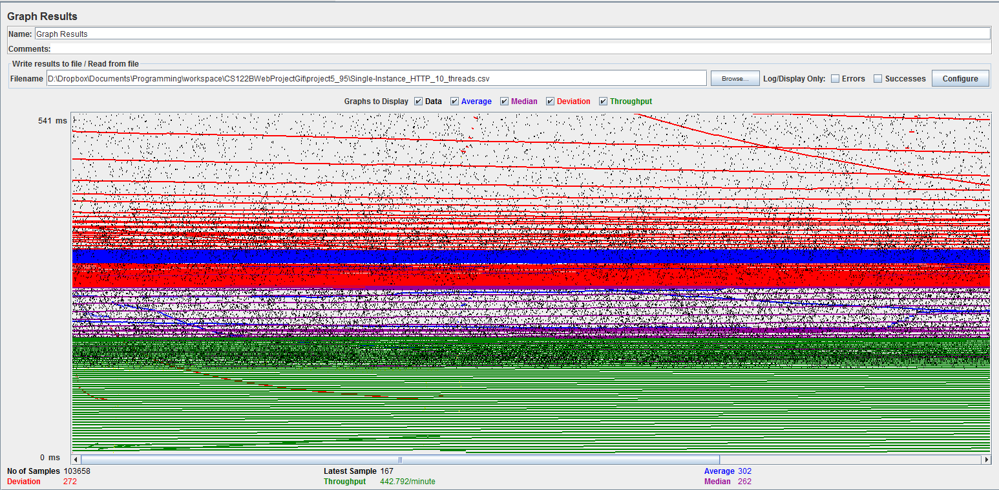
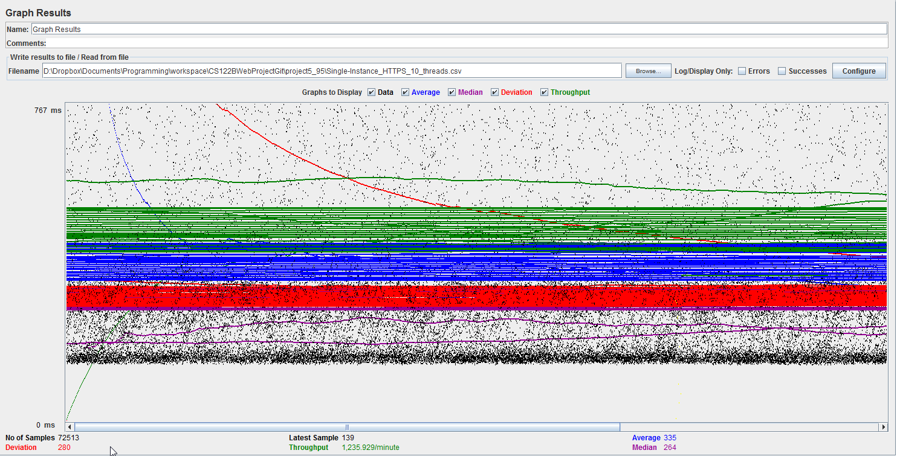
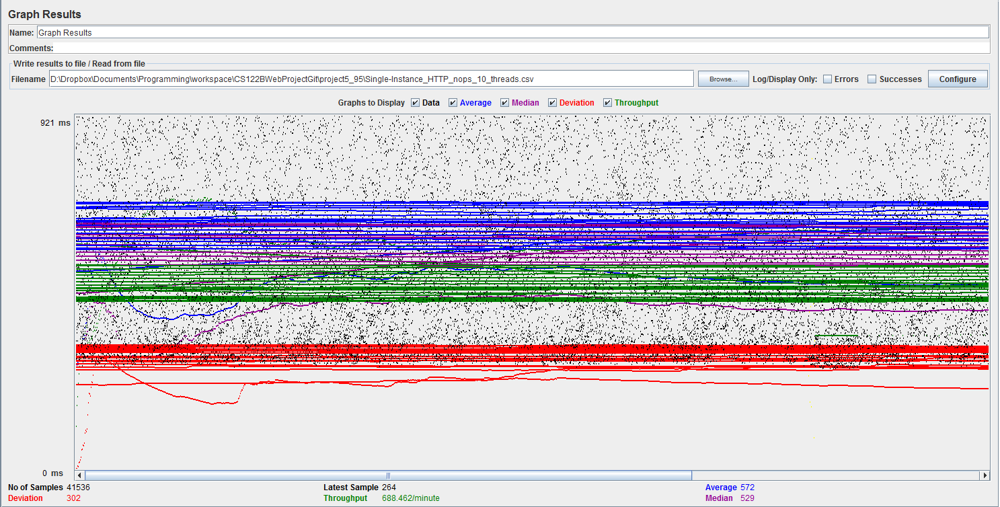
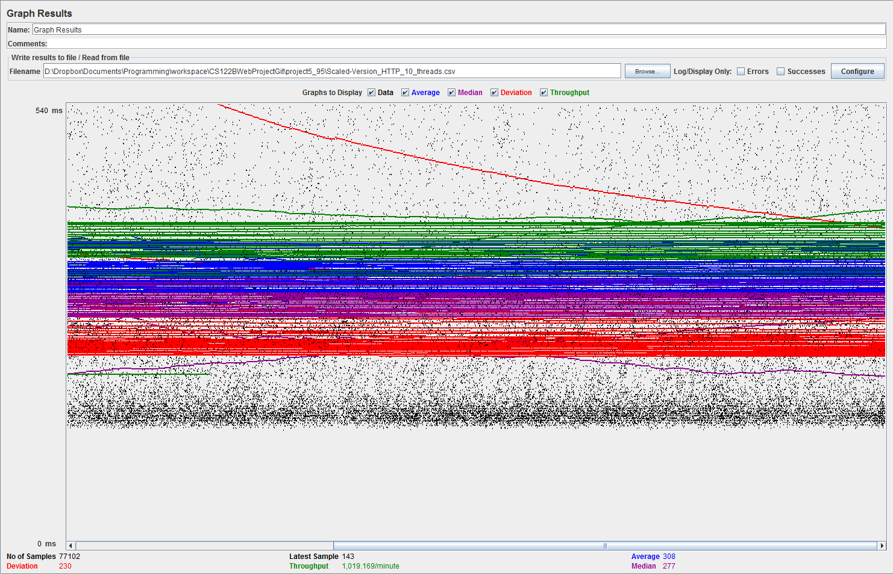
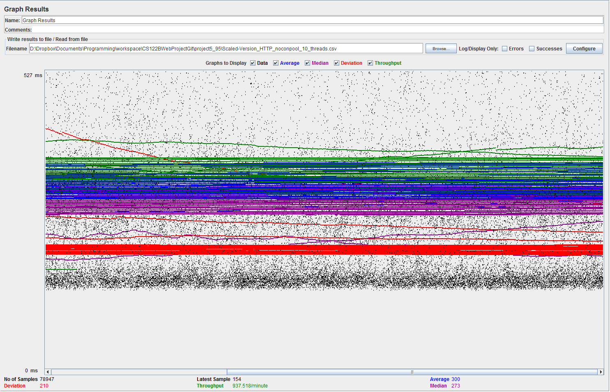

| Single-instance version cases |
Graph Results Screenshot |
Average Query Time(ms) |
Average Search Servlet Time(ms) |
Average JDBC Time(ms) |
Analysis |
| Case 1: HTTP/1 thread |
 |
429 |
4.48 |
3.99 |
Queries were pretty quick, but there was a relatively large delay when accessing the website vs doing queries once actually on the website. |
| Case 2: HTTP/10 threads |
 |
303 |
7.52 |
7.06 |
Having 10 threads is faster than having one, on average. This must be the connection pooling making things more efficient. The queries were slower, likley because the MySQL server was busy with other threads. |
| Case 3: HTTPS/10 threads |
 |
336 |
5.84 |
5.39 |
SSL adds quite a bit of overhead on the requests. |
| Case 4: HTTP/10 threads/No prepared statements |
 |
555 |
6.57 |
6.49 |
Having no prepared statements slows the requests and down a lot more than not using connection pooling. |
| Case 5: HTTP/10 threads/No connection pooling |
 |
317 |
6.92 |
6.52 |
Not using connection pooling is slow, but it is still faster than not using prepared statements. |
| Scaled version cases |
Graph Results Screenshot |
Average Query Time(ms) |
Average Search Servlet Time(ms) |
Average JDBC Time(ms) |
Analysis |
| Case 1: HTTP/1 thread |
 |
304 |
4.67 |
4.14 |
Load balancing adds an additional layer of proxying which delays requests to the website when compared to the non-load balanced version. |
| Case 2: HTTP/10 threads |
 |
308 |
5.43 |
5.02 |
Load balancing adds an additional layer of proxying which delays requests to the website when compared to the non-load balanced version. Having 10 threads is still slightly faster. |
| Case 3: HTTP/10 threads/No prepared statements |
 |
563 |
5.29 |
5.17 |
Just as before, having no prepared statements is a lot slower than not using connection pooling. |
| Case 4: HTTP/10 threads/No connection pooling |
 |
300 |
5.00 |
4.73 |
Not using connection pooling is slow, but much faster than not using prepared statements. |